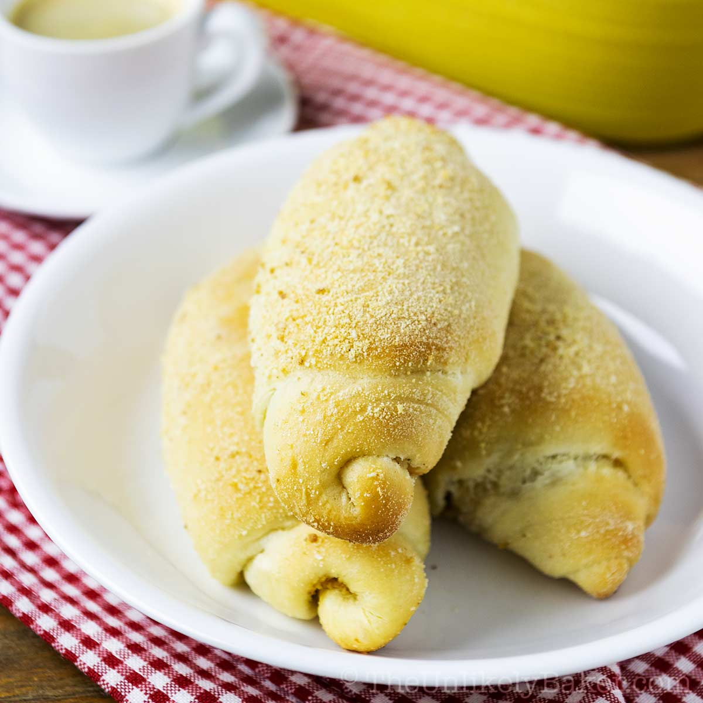
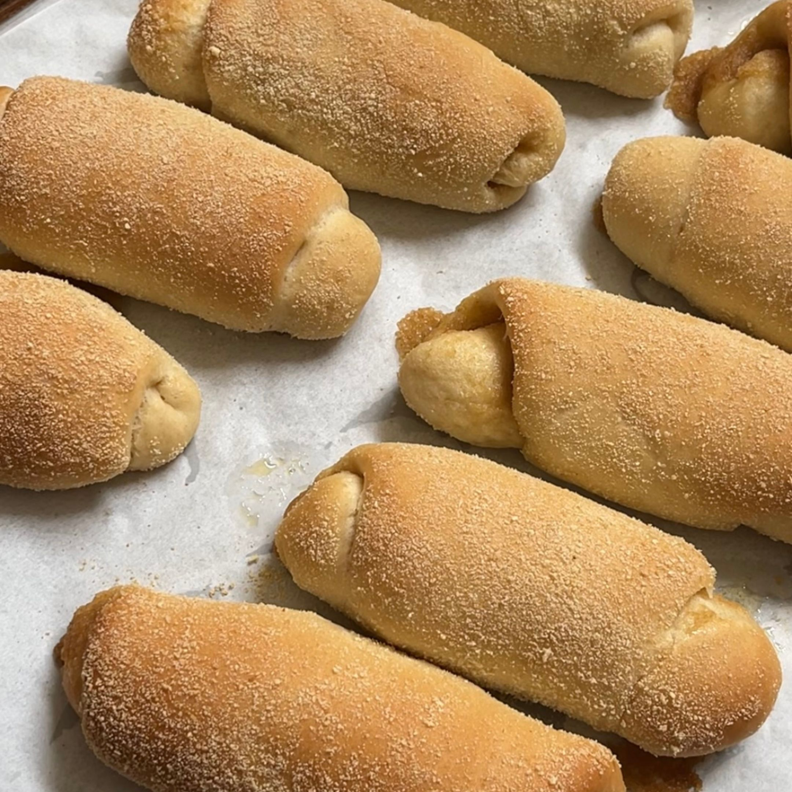
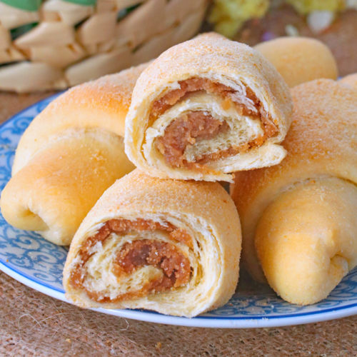
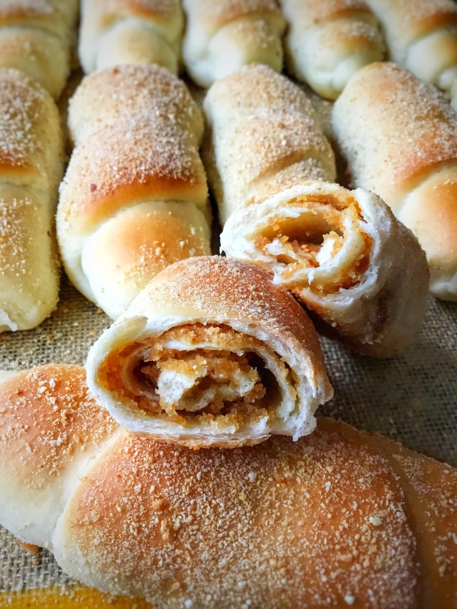
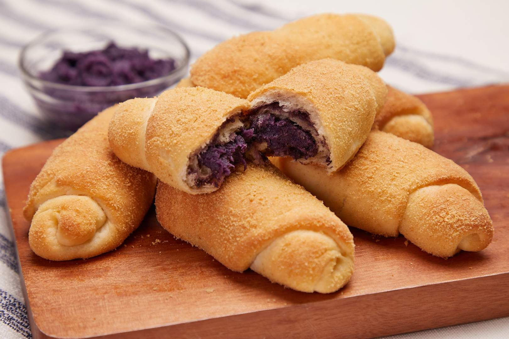

Spanish Bread





History
Ang Spanish Bread sa Pilipinas ay isang local creation na hango sa European bread techniques, pero hindi talaga galing sa Spain. Naging popular ito bilang sweet bread na may buttery, slightly sweet filling, perfect sa merienda o breakfast. Ang Filipino Spanish Bread ay gawa na para mas matamis at flavorful kumpara sa original, kaya’t naging staple sa panaderya at paboritong snack ng maraming henerasyon.
Ingredients & Notes
All-purpose flour
Yeast
Sugar
Butter
Eggs
Filling: sweet butter and sugar mixture
Price
₱5